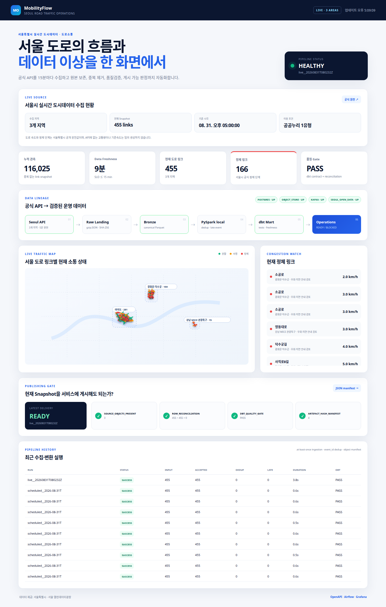

보존된 실행 기록에서 반복 수집·적재·품질 검사가 연결됐습니다
2026.08.31 개인 Docker 환경 기록은 누적 115,570행과 최근 10회 실행·dbt 검사 성공을 보여줍니다. 정기 실행과 분석용 자료 생성이 이어졌다는 근거이며, 장기간의 서비스 가용성은 더 긴 관측 기록으로 평가해야 합니다.
근거: 예약 실행 기록 →IV · 서비스 개발·운영연구 10 / 12 · 개인 프로젝트
서울 열린데이터광장 도로소통 API를 15분 주기로 수집해 원문·Parquet·PostgreSQL/dbt 분석 테이블로 연결하는 개인 프로젝트다. 원천 행과 파일 완료 기록을 같은 트랜잭션으로 확정하고 품질 검사·실행 상태를 기록했다. 2026년 8월 31일 예약 실행 기록과 별도의 통제된 중단·복구 시험을 대조했다. 과거 실행 스냅샷, 복구 실험, 클라우드 일회성 시험을 구분해 제시했다.
주요어 Airflow · PostgreSQL · dbt · Parquet · 실패 복구
정기 수집에서 중복·오류·작업 중단을 구분하고 분석에 쓸 수 있는 자료와 실행 상태까지 연결할 수 있는가?
공개 교통 데이터를 정기적으로 모으면서 중복 수집과 처리 실패를 구분하고, 분석에 사용할 수 있는 상태까지 자동으로 연결하고자 했습니다.
서울 열린데이터광장 API 직접 수집
| 데이터·출처 | 사용 항목 | 기간·범위 |
|---|---|---|
| 서울시 실시간 도시데이터 API · 도로소통 | 도로 링크 ID, 속도, 도로명, 거리, 좌표열, 공식 정체 단계 | 광화문·덕수궁 / 강남 MICE 관광특구 / 여의도 |
| 수집 원문·표준화 파일 | gzip JSON 원문, Parquet 변환본, 실행별 해시·행수 | 15분 주기 수집 / 공개 스냅샷 도로 링크 455개 |
| 실행·품질·복구 기록 | 적재 행수, 실행 성공 여부, dbt 검사, 재실행 결과 | 예약 실행 2026.08.31 / 별도 복구 시험 2026.08.28 |
서울 열린데이터광장 인증키를 사용해 세 지역의 도로소통 응답을 직접 수집했습니다. Airflow가 개인 Docker 환경에서 15분 주기 실행과 재실행을 조정했습니다.
수신한 응답을 gzip JSON으로 보관하고 SHA-256 해시를 남긴 뒤 공통 항목의 Parquet로 변환했습니다.
지역·도로 링크·5분 단위로 내린 수집시각으로 식별키를 구성하고 실행별 행수와 파일 처리 상태를 남겼습니다. 이 시각은 원천의 실제 관측시각과 구분했습니다.
링크 ID·속도·명칭·거리·좌표·정체 단계를 공통 항목으로 맞췄습니다. 원천에 없는 교통량이나 기준속도는 임의로 채우지 않았습니다.
좌표·속도·거리·스키마 오류를 사유와 함께 격리하고, 같은 수집 구간의 식별키로 중복을 제거했습니다.
완료 파일은 건너뛰고 새 파일의 기존 관측 행은 갱신했습니다. 원천 행과 파일 완료 기록을 같은 PostgreSQL 트랜잭션으로 확정했습니다.
도로 링크별 속도·위치·정체 상태가 있어 주기 수집부터 분석용 테이블까지 연결하는 개인 파이프라인의 입력으로 사용했습니다.
반복 실행의 성공·실패를 추적하고 변환에 문제가 생겼을 때 받은 응답을 기준으로 다시 처리하기 위해서입니다.
이미 완료한 파일을 다시 처리하는 경우와 새 파일에 기존 관측 행이 포함된 경우를 구분해야 중복 적재와 누락을 방지할 수 있었습니다.
dbt로 관측 사실 테이블과 도로 기준정보를 구성해 관측 한 건과 도로 구간 한 건의 기준을 분리했습니다.
28개 데이터 검사와 수집 기준시각의 경과, 행수 대조, 해시 기록을 확인해 게시 가능 상태를 표시했습니다.
별도 통제 시험에서 저장기를 중단·재기동하고 밀린 자료 회수, 오류 격리, 중복 제거와 즉시 재실행 결과를 확인했습니다.
입력 스키마·열 매핑, DB 적재, 변환·품질 검사, 실행 기록의 책임을 구분했습니다. 원천 행과 완료 기록은 같은 트랜잭션으로 확정하고 dbt 변환은 뒤 단계에서 실행합니다. 공개 저장소에서 구현과 테스트를 함께 볼 수 있습니다.
| 평가·결과 항목 | 확인한 값·산출물 | 조건과 해석 범위 |
|---|---|---|
| 예약 실행 기록 | 누적 115,570행 / 최근 10회 성공 | 2026.08.31 개인 Docker 환경. 현재 상태가 아님. |
| 분석용 품질 검사 | dbt 28개 | 수집 기준시각·행수·실행 기록과 함께 확인. |
| 중단·복구 시험 | 1,200 = 격리 56 + 중복 104 + 채택 1,040개 | 2026.08.28 통제된 전송 시험. 재기동 후 밀린 자료 회수 17초. |
| 즉시 재실행 | 추가 처리 입력 0개 | 동일 대상의 재처리 동작 확인. 상시 가용성 지표와 구분. |
분석용 데이터를 반복 수집할 때 중복과 실패 후 재처리를 구분할 수 있도록 만들었습니다.
개인 환경의 예약 실행 기록은 누적 115,570행·최근 10회 성공입니다. 별도 전송 복구 시험에서는 오류 격리·중복 처리를 확인하고 즉시 재실행 시 추가 적재 대상이 0건임을 검증했습니다.
원천→분석 테이블의 처리 구조, 트랜잭션 경계, 품질 검사 결과와 복구 시험을 분리해 도식화했다. 공개 화면은 보존된 실행 스냅샷의 상태를 필터로 읽는 방식이다.
수집 기준시각은 원천의 실제 관측시각이 아니다. local[2] 실행을 분산 성능으로 표현하지 않으며 과거 성공 기록을 현재 가용성으로 제시하지 않는다.
2026.08.28 개인 환경의 별도 전송 복구 시험. 보존한 1,200개 중 오류 56개를 격리한 뒤 변환 입력 1,144개 = 채택 1,040개 + 제거 중복 104개를 대조했습니다. 기업 운영 성과가 아닌 통제된 시험입니다.
2026.08.31의 보존된 기록입니다. 현재 서버 상태를 조회하지 않습니다.
녹화 화면의 116,025행은 위 요약보다 뒤 시점의 누적 값입니다. 화면 속 상태 표시는 당시의 기록입니다.
2026.08.31 개인 Docker 환경 기록은 누적 115,570행과 최근 10회 실행·dbt 검사 성공을 보여줍니다. 정기 실행과 분석용 자료 생성이 이어졌다는 근거이며, 장기간의 서비스 가용성은 더 긴 관측 기록으로 평가해야 합니다.
근거: 예약 실행 기록 →통제된 전송 복구 시험에서 보존한 1,200개는 오류 격리 56개, 제거 중복 104개, 채택 1,040개로 대조됐습니다. 즉시 재실행 입력 0건은 같은 처리 대상을 다시 실행할 때 추가 처리되지 않는 동작을 확인한 결과입니다.
근거: 중단·복구 시험 결과 →응답을 받았어도 잘못된 값·중복·오래된 자료가 남을 수 있습니다. 원문 보존과 품질 검사, 처리 기록을 연결하면 어떤 자료를 게시하고 어떤 자료를 재검토할지 판단할 수 있습니다.
파일 완료 기록과 원천 행을 함께 확정하고 재실행 대상을 구분하는 구조가 중요했습니다. 식별키가 수집시각 기준이라는 점은 향후 다른 원천을 연결할 때 다시 검토해야 할 조건입니다.
개인 프로젝트의 반복 실행과 통제된 복구 시험 결과입니다. 기업 운영비 절감이나 상시 클라우드 서비스의 가용성을 입증한 수치는 아닙니다.
개인 환경의 정기 수집·변환·품질 검사와 실행 기록 화면을 구현하고, 별도 통제 복구 시험을 수행했습니다.
아래는 결과를 바탕으로 제안하는 다음 단계입니다. 실행하거나 효과를 측정한 성과와 구분했습니다.
| 활용할 판단 | 제안하는 사용 방법 | 적용 전 확인 |
|---|---|---|
| 도로소통 대시보드의 데이터 입력 | 품질 조건을 통과한 분석용 테이블을 대시보드에 연결하고 수집 시점·최근 성공·보류 사유를 함께 제공합니다. | 최신성 기준이 실제 관측시각이 아닌 수집시각 기준임을 표시하고 장기 실행의 실패·복구 기록을 축적합니다. |
| 다른 공개 데이터의 반복 수집 | 원천별 항목 대응·식별키·품질 조건을 정의하고 원문 보존 → 적재 → 변환 → 검사 흐름을 재사용합니다. | 새 원천의 시간 의미·재수신 방식에 맞게 중복 기준을 검토하고 중단·재실행 시험을 다시 수행합니다. |
이 글은 확인된 작업 기록과 산출물을 바탕으로 정리했다. 자료 기간·실험 조건·평가 대상이 다른 기록은 각각의 범위를 표시했다. 과거 요약 PDF보다 최신 웹 본문의 수행 범위와 조건을 우선해 읽는다.
검증 조건과 해석할 수 있는 범위를 함께 정리했습니다.
Airflow가 15분 수집과 재실행을 조정합니다. event_id는 지역·도로 링크·수집시각을 5분 단위로 내린 값으로 구성합니다. API의 실제 관측시각이 아니므로 같은 원천 관측을 다른 수집 구간에서 다시 받는 것까지 식별하지는 못합니다. 원문 gzip JSON과 변환 Parquet 파일에는 실행별 해시·행수 기록을 남깁니다.
PostgreSQL/dbt의 28개 데이터 검사와 처리 기록의 원본 객체 수·행수 대조·dbt 결과·해시 목록을 사용합니다. READY의 해시 조건은 목록 개수와 해시 값의 존재를 확인합니다. 저장 객체를 다시 읽어 해시가 일치하는지 검사하는 기능은 아닙니다. 원천에 없는 교통량이나 기준속도는 임의로 만들지 않습니다.
Airflow·PostgreSQL/dbt·PySpark는 로컬 Docker에서 실행했으며 PySpark의 실행 모드는 local[2]입니다. 현재 수집량에는 분산 처리가 필요하다는 근거가 없습니다. 이 프로젝트에서는 Spark의 변환·중복 제거·재실행 동작을 검증했으며 처리량 개선이나 분산 운영 성과를 주장하지 않습니다.
정기 수집과 변환·검사는 개인 컴퓨터에서 실행했습니다. 전체 처리 흐름의 클라우드 상시 운영 실적은 아닙니다.
예약 실행 기록은 2026년 8월 31일 로컬 Docker 환경의 누적 115,570행과 최근 10회 성공을 보여줍니다. 화면 녹화와 같은 날 이후 AWS 확인 기록의 116,025행은 더 늦은 확인 시점의 값입니다.
AWS에서는 S3 객체 적재, ECR 이미지 저장소와 CloudWatch 상태 지표를 구성했습니다. Fargate 일회성 작업이 이미지 읽기·S3 일부 읽기·CloudWatch 기록을 수행하고 종료 코드 0으로 끝나는지 확인했습니다. 상시 ECS 서비스나 AWS에서 Airflow·Spark를 운영한 결과는 아닙니다.
현재 실시간 상태가 아닌 과거 실행 기록입니다. QR에서는 검사 결과·원본 기록·실행 녹화를 확인할 수 있습니다.
PostgreSQL의 같은 트랜잭션에서 raw.traffic_observation 적재와 ops.object_manifest 파일 완료 기록을 확정합니다. 완료 전 실패하면 둘 다 취소됩니다. 이미 처리한 동일 파일은 완료 기록을 확인해 건너뜁니다. 새 파일에 기존 event_id가 있으면 새 행을 추가하지 않고 기존 원천 행을 갱신합니다. 이 적재가 끝난 뒤 dbt가 fct/dim 분석용 테이블을 만드는 별도 단계를 실행합니다. Airflow에는 재시도·시간 제한과 max_active_runs=1을 설정했습니다.
fct_traffic_observation은 지역·도로 링크·5분 단위 수집 기준시각으로 구분되는 event_id 한 건을 저장하는 증분 모델입니다. dim_road_segment는 도로 구간별 최신 명칭·좌표·길이를 보관합니다. 사실 테이블은 event_id, 도로 정보는 segment_id가 기준입니다. observed_at은 실제 관측시각이 아니므로 최신성 검사도 수집 기준시각의 경과를 확인하는 범위입니다.
2026.08.28 통제된 전송 복구 시험에서 Bronze writer를 중단한 동안 1,200개 이벤트를 보존하고 재기동 후 17초에 밀린 자료를 회수했습니다. 첫 변환은 중복 104개를 제거했고 즉시 재실행 입력은 0건이었습니다. 서울 API의 실제 장애나 처리량 측정은 아닙니다. READY는 처리 기록과 검사 결과의 조건 통과를 뜻하며 파일 저장 후 재검증을 뜻하지 않습니다.
공개 저장소의 README에 Docker Compose 실행, API 키 설정, 검증 명령과 운영 범위를 설명합니다. 데모 열람에는 API 키가 필요하지 않습니다. 직접 수집을 재현할 때는 사용자 본인의 서울 열린데이터광장 키와 로컬 실행환경이 필요합니다.
구현 단계는 순서로, 확인된 시험·실행 시점은 날짜로 표시했습니다. 현재 서버 상태를 뜻하지 않습니다.
수집 구조 구현
Airflow에서 정기 수집을 조정하고 원문과 변환 자료를 나눠 보관했습니다. 지역·도로 구간·수집 기준시각으로 같은 처리 대상을 구분했습니다.
확인한 결과기준시각은 실제 관측시각이 아니라 수집시각입니다. 중복 구분의 적용 범위를 이 기준에 맞췄습니다.
저장·변환 구현
원천 행만 저장되거나 완료 기록만 남는 상황을 피하기 위해 PostgreSQL 트랜잭션으로 두 작업을 묶었습니다. dbt의 분석용 테이블 생성은 원천 적재 뒤의 별도 단계로 두었습니다.
확인한 결과같은 파일은 건너뛰고 새 파일의 기존 관측 행은 갱신하는 방식으로, 파일 재처리와 행 중복을 구분했습니다.
2026.08.28
writer를 중단한 동안 전송 자료를 보존한 뒤 재기동했습니다. 회수된 자료에 오류 격리와 중복 제거를 적용하고 같은 처리를 다시 실행했습니다.
확인한 결과1,200개를 보존해 17초에 회수했고 오류 56개를 격리했습니다. 첫 변환에서 중복 104개를 제거했으며 즉시 재실행 입력은 0건이었습니다.
2026.08.31
개인 컴퓨터의 예약 실행 기록과 저장 행수·dbt 검사 상태를 모아 조회 화면으로 정리했습니다. 실행 기록 JSON과 동작 녹화도 연결했습니다.

확인한 결과누적 115,570행, 최근 10회 성공, 최근 수집·저장 455행을 확인했습니다. 이후 시점 화면의 116,025행과 구분했습니다.
별도 AWS 기능 확인
S3 읽기와 CloudWatch 상태 기록 등을 Fargate 일회성 작업으로 확인했습니다. Spark는 로컬 변환·재실행 경험으로 정리했습니다.
확인한 결과일정 실행과 품질 검사의 결과를 확인했지만 상시 클라우드 운영이나 분산 처리 성능 개선의 근거로 확대하지 않았습니다.
| 용어 | 이 자료에서의 의미 |
|---|---|
| API·파이프라인 | 외부 자료를 요청하는 통로와, 수집·변환·저장·검사를 순서대로 연결한 처리 흐름입니다. |
| Airflow·dbt | 각각 수집 일정·재실행 관리와 분석용 테이블·품질 검사를 담당합니다. |
| 사실·기준정보 테이블 | 시간에 따라 쌓이는 도로 관측 기록과 도로별 최신 명칭·위치 정보를 나눈 구조입니다. |
| 해시 기록·READY | 처리 기록의 건수, dbt 결과, 파일별 해시 기록이 조건을 충족한 상태입니다. 저장 객체를 다시 읽어 해시를 대조하는 검사는 아닙니다. |
| observed_at·최신성 | 실제 관측시각이 아니라 수집시각을 5분 단위로 내린 값입니다. 최신성 검사도 이 기준시각이 얼마나 지났는지를 봅니다. |
| AWS 확인 범위 | S3 저장, ECR 이미지 보관, CloudWatch 상태 기록, Fargate 일회성 작업을 확인했습니다. 전체 수집 흐름의 클라우드 상시 운영은 아닙니다. |